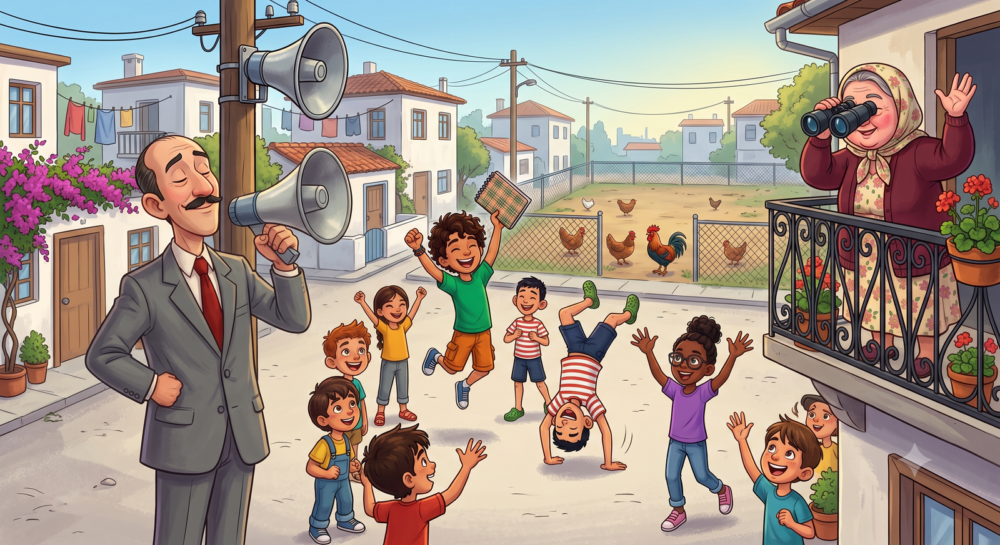
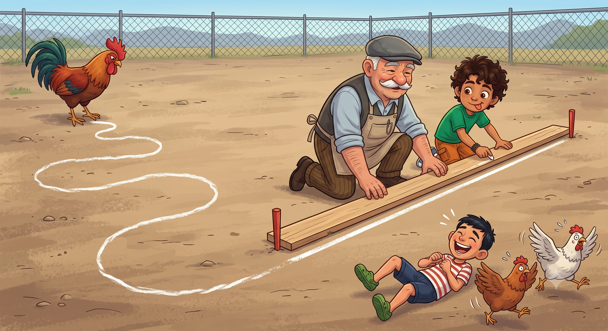
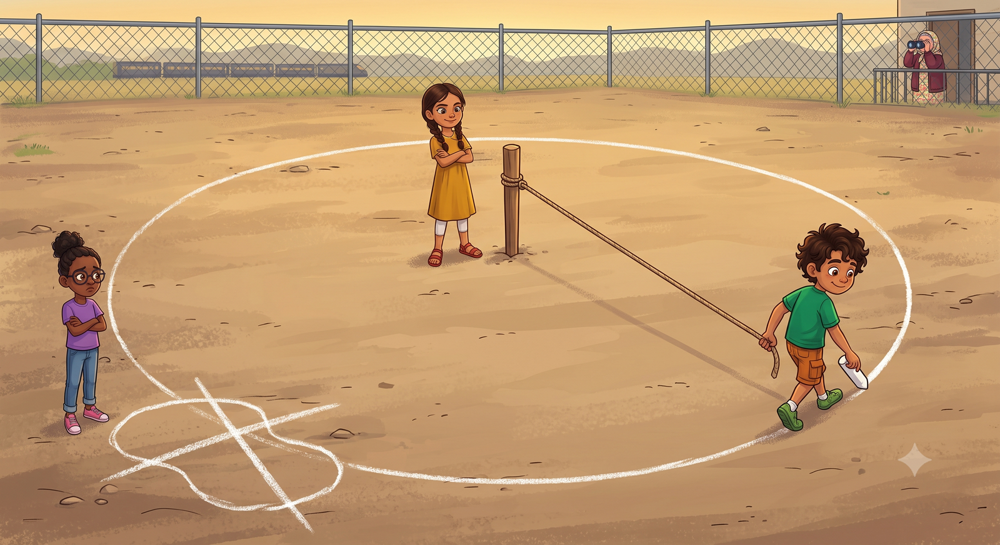
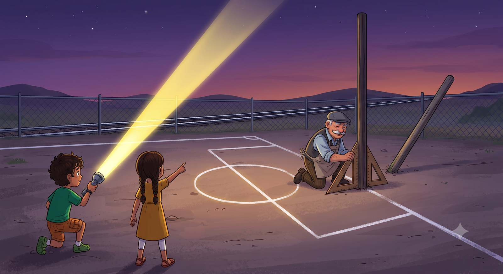

Mahalleler arası futbol turnuvası kapıda ama ortada saha yok; tavukların gezindiği bomboş bir arsa var. Üstüne bir de "Saha Çizim Genel Sorumlusu" seçilirsen? Kahramanımıza nokta, doğru ve çemberlerle sahayı çizmesinde yardım etmeye hazır mısın?
Bizim mahallede haberler ikiye ayrılır: Muhtarın hoparlörden okuduğu haberler ve Mübeccel Teyze'nin balkondan yaydığı haberler. O gün muhtar, hoparlörün başına geçip boğazını üç kere temizledi. Bu, önemli haber demekti. "Sayın mahalleli! Mahalleler arası minikler futbol turnuvası düzenlenecektir. Finaller bizim mahallede oynanacaktır!" Muhtar daha "oynanacaktır"ın sonunu getirememişti ki Mübeccel Teyze balkondan skoru bile açıkladı: "Bizimkiler yener inşallah!"
Sevinçten zıpladık, sarıldık, birbirimizin sırtını dövdük. Sonra hepimiz aynı anda durduk. Çünkü hepimizin aklına aynı anda aynı korkunç gerçek gelmişti: Bizim mahallede saha yoktu. Saha diye elimizde, dedemin nalbur dükkânının arkasında, üzerinde beş tavukla bir horozun mesai yaptığı bomboş bir arsa vardı.
Çocuklar beni oy birliğiyle "Saha Çizim Genel Sorumlusu" seçtiler. Neden mi ben? Birincisi, matematik defterim mahallede elden ele gezerdi; Ayşe'nin annesi bile "Şunun defterine bak, dantel gibi maşallah" derdi. İkincisi, dedemin dükkânında dünyanın bütün aletleri vardı: ipler, tebeşirler, tahta latalar, bir de dedemin gözü gibi baktığı, kimseye elletmediği kocaman bir gönye. Dedem gönyeyi sorana "O alet değil evlat, o aile yadigârı" derdi.
O akşam defterime kocaman yazdım: "Görev: Sahayı çiz. Süre: İki gün. Durum: Panik."

Sabah ilk iş, tebeşiri kaptım. Kenar çizgisi dediğin nedir ki? Çekersin bir çizgi, olur biter. Çektim. Arkamı döndüm, baktım. Bir daha baktım. Benim çizgi, çizgiden çok, sıcaktan bunalmış bir solucana benziyordu. Emre yere yattı, gülmekten tavukları ürküttü: "Abi bu saha çizgisi değil, bu makarna!" Horoz bile dönüp bir kez baktı; yemin ederim, o da beğenmedi.
Tam tebeşiri fırlatıp istifa edecektim ki dedem çıkageldi. Dedem öyle hemen akıl vermez; önce kasketini kaldırır, kafasını kaşır, manzarayı seyreder. Seyretti. "Evlat," dedi, "ölçmeden çizen, çizdiğine ağlarmış." Sonra koltuğunun altındaki upuzun tahta latayı gösterdi: "Önce köşelere birer işaret koy. Sonra latayı iki işaretin arasına daya, tebeşiri kenarından kaydır. Gerisini çizgi kendi bilir."
Dediğini yaptık. Köşelere koyduğumuz o minicik işaretler birer noktaydı. Lata da ölçüsüz bir cetvel, yani çizgeç. İki noktanın arasını lata boyunca birleştirince ortaya öyle dümdüz bir çizgi çıktı ki Emre'nin ağzı açık kaldı: bir doğru parçası! Sahanın dört kenarını da böyle çizdik; başı belli, sonu belli, dört tane kibirli, dümdüz çizgi. İple ölçtük: sahanın boyu tam kırk adım. Deftere yazdım, altını da cetvelle çizdim. Artık bende cetvelsiz iş yok.
📐 Defterime not aldım: Köşedeki işaret bir nokta: A. İki noktayı birleştiren dümdüz yol bir doğru parçası: [AB]. Uzunluğu ölçülebilir: |AB| = 40 adım.

Sıra sahanın ortasındaki yuvarlağa geldi. "Onu da elimle çizerim," dedim. Çünkü ben ders almayı pek sevmem, iki kere üst üste almayı hiç sevmem. Çizdim. Etrafına toplandık, uzun uzun baktık. Ayşe "Bence patates," dedi. Emre "Yok canım, amip. Fen kitabında gördüm, aynısı," diye itiraz etti. Mübeccel Teyze balkondan dürbünle bakıp son noktayı koydu: "Evladım o ne öyle, poğaça mı?"
Ben tam üçüncü kez istifa ediyordum ki kardeşim Elif çıkageldi. Elif sekiz yaşındadır ama aklı, dedemin deyimiyle, "dolabın en üst rafında" durur. Elinde bir kazık, bir top ip. "Abi," dedi, "kazığı tam ortaya çakalım. İpin bir ucu kazıkta, öbür ucunda tebeşir. İpi gergin tut, yürü. Gerisine karışma." Karışmadım. Yürüdüm. Ve gözlerimin önünde bir mucize oldu: Tebeşir, kazıktan hep aynı uzaklıkta döndüğü için kusursuz, dımdızlak yuvarlak bir çember çıktı ortaya. Poğaça değil, patates değil; çember!
Dedem kasketini kaldırıp güldü: "Siz şimdi dev bir pergel oldunuz. Kazık merkez, gergin ip de yarıçap." İpimiz üç adımdı. Çemberin bir kenarından merkezin üstünden geçip karşı kenara yürüdüm: altı adım. Elif kuralı benden önce buldu tabii: "Çap, yarıçapın iki katı!" Ben de bulacaktım. Az kalmıştı.
⭕ Defterime not aldım: Merkeze eşit uzaklıktaki noktalar → çember. Merkezden çembere: yarıçapr = 3 adım. Merkezden geçen: çapR = 2 × r = 6 adım. Penaltı işareti içi dolu küçücük bir daire oldu!

Hava kararırken kaleleri diktik. Yani dikmeye çalıştık. Benim diktiğim direk, dedemin deyimiyle "selam veren minare" gibi yana yatmıştı. Dedem o aile yadigârı gönyeyi — evet, sonunda elletti — direğin dibine dayadı: "Direk zemine dik olacak evlat. Yoksa ilk rüzgârda top gole, direk seyahate gider." Direk gönyenin köşesine oturunca dimdik oldu. Dedem bunun adının dikme olduğunu, bir de sırrını söyledi: En kısa yol, her zaman dik olan yoldur. Dedem kestirmeden gitmeyi sever çünkü.
İşimiz bitince el fenerimi gökyüzüne tuttum. Işık fenerden çıktı, tek yönde uzadı da uzadı; ucunu bucağını göremedim. "İşte bu bir ışın," dedim, "bir noktadan başlıyor ama bitmeye hiç niyeti yok." Elif uzaktaki tren raylarını gösterdi; raylar iki yandan da göz alabildiğine uzanıyordu. "O zaman bu da doğru," dedi, "iki ucu da sonsuza gidiyor." Sonsuz dediğin ne kadar uzak, onu hâlâ bilmiyorum ama Mübeccel Teyze'nin sesinin ulaştığı yerden uzak olduğu kesin.
Tam eve dönüyorduk ki muhtar aradı. Muhtar telefonda da anons eder gibi konuşur: "Sayın Saha Çizim Genel Sorumlusu! Yarın sabah hakem heyeti gelecektir. Saha planı tek tek kontrol edilecektir!" Kapattım, defterime baktım. Defterim bana baktı. Acaba her şeyi doğru yapmış mıydık?
🔦 Defterime not aldım: Bir noktadan başlayıp tek yönde sonsuza giden: ışın[AB. İki ucu da sonsuza giden: doğruAB. Zemine dik inen: dikme⊥.

Hakem Heyeti Kontrolü! 🎯
Hakemler saha planındaki geometrik şekilleri soruyor. Sorulan şekli planın üzerinde bulup tıkla, kahramanımızın yüzünü kara çıkarma!
⭐ Puan: 0❓ Soru: 1/5
🎉 Saha Onaylandı!
Hakem heyeti hayran kaldı: "Bu mahalle geometri biliyor!" Turnuva bizim sahada başlıyor!
Kâşif Defteri — bugün öğrendiklerimiz:
• NoktaA — eni boyu olmayan işaret (penaltı noktası)
• Doğru parçası[AB] — iki nokta arası, uzunluğu |AB| ölçülür (kenar çizgileri)
• Işın[AB — bir noktadan tek yöne sonsuza (el feneri)
• DoğruAB — iki yönde de sonsuza (tren rayları)
• Çember — merkeze eşit uzaklık; r yarıçap, R = 2r çap (orta yuvarlak)
• Dikme⊥ — zemine dik, en kısa yol (kale direği)